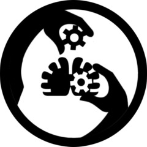

MTF Epsilon-7 “Forget Me Nots”
Task Force Mission: Mobile Task Force Epsilon-7 specializes in the undercover disruption of the research and development of mnestic drugs.

Task Force Mission: Mobile Task Force Epsilon-7 specializes in the undercover disruption of the research and development of mnestic drugs.